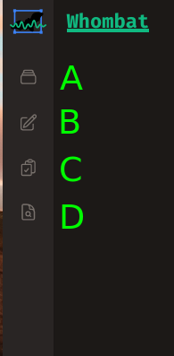
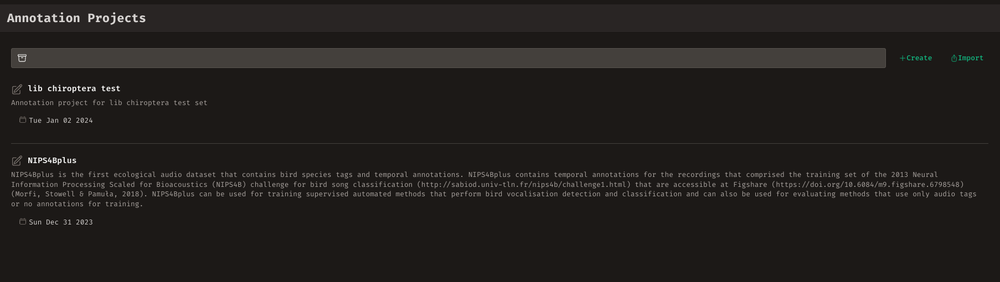
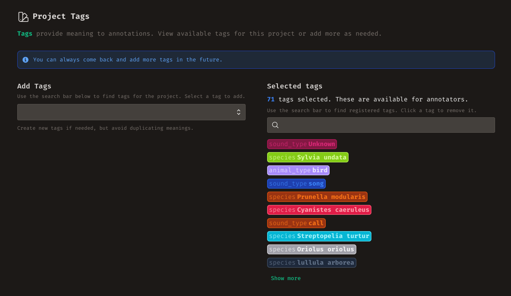
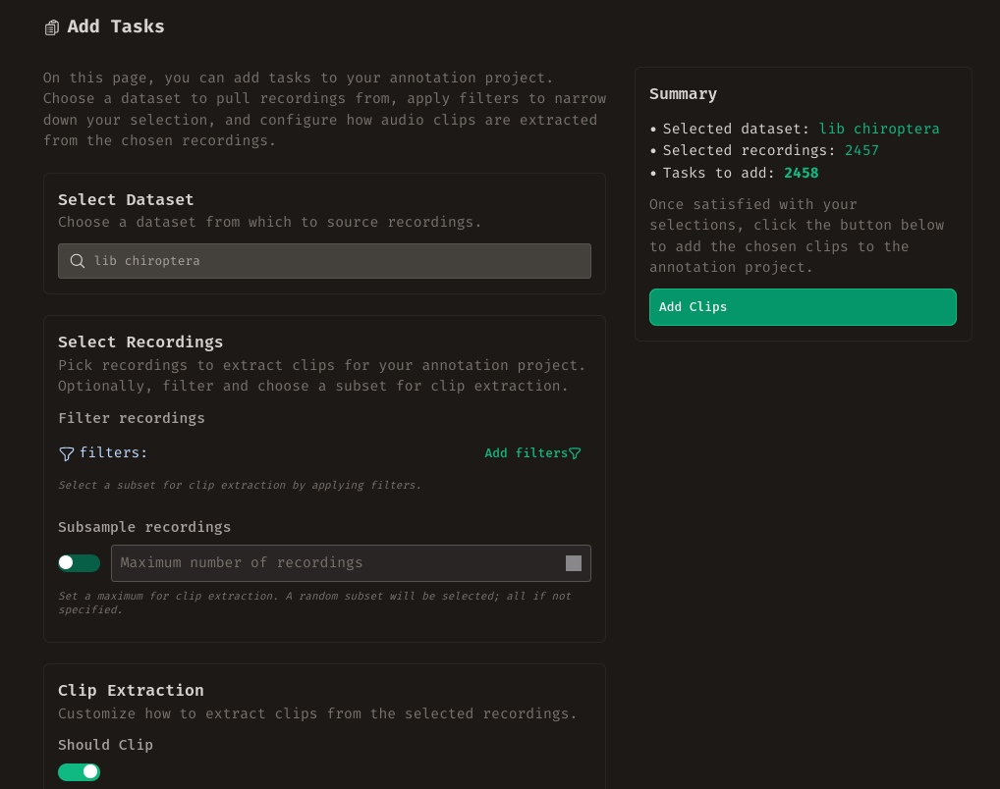
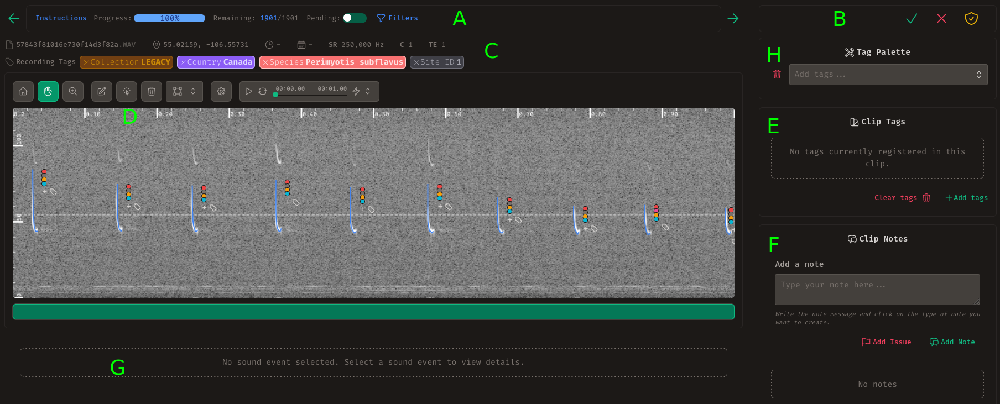

Audio Annotation¶
Welcome to the core of Whombat: Annotation Projects. This is where the real work gets done. It's where you and your fellow annotators can dive deep into your audio data, applying your expertise to identify, classify, and annotate important sound events.
In this section, we will guide you through various topics:
- Understanding Annotation: Delve into the fundamentals of annotation.
- Getting Started with Annotation: Learn how to initiate your annotation work in Whombat.
- Creating or Importing an Annotation Project: Explore the steps to set up a new project or import an existing one.
- Selecting Annotation Tags: Understand the importance of selecting the right tags for annotation.
- Adding Annotation Tasks to a Project: Discover how to enhance your project with specific annotation tasks.
- The Annotation Project Dashboard: Navigate through the project dashboard for a comprehensive overview.
- Annotating a Clip: Dive into the actual process of annotating a clip with precision.
- Exporting the Data: Learn how to export annotated data for further analysis or sharing.
Explore Whombat with Example Data
Want to see Whombat in action without starting from scratch? Import the example dataset and annotation project to explore the interface and functionality with pre-populated data. Check out the import data guide for step-by-step instructions.
Understanding Annotation¶
Annotation in audio is about adding human-interpretable meaning to raw audio data, and it can take various forms. For instance, attaching a tag to a recording constitutes a form of annotation. However, Whombat primarily centers on two types of annotation.
The first type is annotating sound events. In Whombat, a sound event encompasses any distinguishable sound of interest to the annotator. To annotate a sound event, the annotator marks the RoI in the spectrogram where the sound occurs and attaches tags or notes to it.
Defining the RoI
The method an annotator uses to mark the RoI for each sound event can vary, depending on the type of sound being annotated. Whombat provides multiple approaches for this. For instance, annotators can use a bounding box to encompass the starting and ending time of the sound event, along with its lowest and highest frequency. Alternatively, annotators may choose to mark only the exact moment in time when the sound occurs, particularly for short pulses.
The second type is annotating an audio clip. Annotations for a clip in Whombat involve attaching tags or creating notes for the entire clip, not for a specific sound within it. However, when annotating a clip, the annotator can, of course, create annotations for the sound events within the clip.
What is a Clip?
In Whombat, an audio clip is a portion of a complete recording, like the first second of a soundscape. Surprisingly, the entire recording can also be seen as a clip, and even a clip extending beyond the recording's end is valid. Whombat leans on clips for annotation because they offer a standardized and more manageable way of annotating. Imagine annotating a full 1-hour recording—clips make this task more feasible. Additionally, using clips of consistent duration within a project enhances comparability.
With these two ways of annotation, Whombat lets you describe audio details exactly as you need.
Annotation serves a specific purpose, whether it's reviewing all recordings from a dataset or gathering material for ML development. To streamline this process, Whombat neatly organizes all annotation work into annotation projects.
An annotation project in Whombat comprises annotation tasks, a collection of audio clips awaiting annotation. Each project should establish a clear criterion for what constitutes a successfully annotated clip. Therefore, we encourage each project to provide explicit instructions on how to annotate. As a best practice, designing a set of tags for consistent use across all annotation work within the project enhances efficiency and coherence.
Getting Started With Annotation¶
Now that you're prepared to begin annotating, head to the annotation section by clicking the annotation button (labeled B in the figure) in the left sidebar or utilizing the navigation cards on the homepage.

Upon entering, you'll encounter a list of all registered annotation projects. Locate the specific project you want to work on using the search bar and click on it.

Creating or Importing an Annotation Project¶
If you want to initiate a new annotation project, click the +Create button at the top of the project list. You'll be prompted to provide a name for the project, a description outlining its purpose and contents, and crucially, annotation instructions.
If you already have an exported annotation project file, you can import it by clicking the Import button and selecting your file.
Crafting Effective Annotation Instructions
Whombat provides tools for annotation without prescribing specific annotation instructions. This can make the definition of completing an annotation task somewhat open-ended. When drafting annotation instructions, consider your project goals and align the instructions accordingly. For projects requiring annotators to determine if a clip contains a particular sound, provide specific guidance like "Review each clip, listen in full, and decide if it contains car sounds. If yes, add a 'sound:car' tag; otherwise, leave it empty." For annotating sound events, specify how to mark the RoI, the preferred geometry, and aim for precision. For example: "Use a bounding box to enclose each bat echolocation pulse, encompassing the main harmonic. Keep the boxes tight, utilize the -80dB threshold to cut off extraneous noise, and add the 'event:echolocation' tag for each pulse. Mark faint pulses but, if uncertain, add a tag indicating uncertainty."
The Annotation Project Dashboard¶
After selecting or creating the desired annotation project, you'll be directed to the project dashboard. Here, you'll find a summary of annotation progress, indicating how many tasks have been completed, how many have encountered issues, and how many are still pending.
You can also view and modify project information, including the description and annotation instructions.
Deleting an Annotation Project
If needed, you have the option to delete an annotation project. However, exercise caution as this action permanently erases all annotations within the project. Ensure you are confident in this decision or have a backup in place.
Additionally, you can access basic statistics detailing the number of annotations made, categorized by tag. Finally, you'll find a section highlighting the most recent issues within the project, facilitating quick resolution.
Selecting Annotation Tags¶
Navigate to the "Tags" tab in the navigation header or click the "Manage Tags" button in the Tag Summary section of the dashboard to manage tags specific to this annotation project. Here, you can view and search all currently whitelisted tags for annotation, remove existing ones, or introduce new ones.
Use the search bar on the left to find existing tags for addition or create new ones. The tags listed on the right column are registered for the project. Click on a tag to remove it.

Restricted tag set
During annotation, annotators will only see tags registered in the project when searching. This helps prevent duplication and ensures the correct tags are consistently used.
A well designed tag set
As tags can cover a wide range, agreeing on a set of tags for a project is essential. This ensures tags are easily interpretable and applicable. It's advisable to establish some tags before annotation, facilitating a smoother process and clearer task understanding for annotators. However, tags can be added progressively, so there's flexibility in this aspect. Don't feel pressured to finalize all tags from the start.
Adding Annotation Tasks to a Project¶
As discussed in the Understanding Annotation section, an annotation task involves a full annotation of an audio clip (based on the provided annotation instructions). To add tasks to a project, click the "Add Tasks" button in the Progress Overview on the dashboard or press the "Tasks" button in the navigation header.
To add tasks to the project:
- Select a Dataset: Choose the dataset from which recordings will be sourced.
- Choose Recordings: Select specific recordings from the chosen dataset.
- Determine Clip Selection Method: Decide how to select clips from the chosen recordings.

The first step is straightforward. However, for the second step, you have the option to include only a subset of all dataset recordings. This can be achieved by applying filters to refine the set of recordings or by randomly subsampling from the entire set of recordings.
The clip selection step is equally crucial. Here, you can choose between using the entire recordings as clips or using clips of a predefined duration. The second option is the default, and if selected, you can configure the duration of each clip, the amount of overlap between consecutive clips, and the maximum number of clips to extract from each recording.
Avoid Many Clips per Recording
Although having numerous annotated clips may seem beneficial, especially for training ML models, the number of clips can sometimes be misleading. Annotating many clips from the same recording may not provide fully independent examples as they share a common background. Therefore, the number of clips may not immediately reflect the dataset size. Whenever possible, it's preferable to have a few clips from many different recordings than numerous clips from a few recordings.
Selecting an adequate clip duration
Choosing the right clip duration for the annotation task is a pivotal decision. A thoughtful selection should consider the goals of annotation, how annotators will create annotations, and ultimately, how the annotations will be utilized. If there are specific sounds to annotate, ensure the clip duration is longer than the typical duration of those sounds. This ensures the entire sound is encompassed, providing a sufficient buffer. Annotators will only have access to the audio clip and recording metadata, so it's vital to ensure the audio clip contains enough content for correct interpretation. Clips that are too short may be challenging to understand, while overly long clips may become tedious to annotate. Lastly, if the intention is to use annotations for training an ML model, consider the model's training requirements and input expectations.
Annotating a Clip¶
When you're ready to start annotating, click on the "Annotate" button in the navigation header. This action will open the annotation interface, as illustrated in the image below.

In this interface, you'll encounter one annotation task at a time, featuring the spectrogram of the corresponding clip and controls for adding annotations. The primary annotation workflow involves reviewing the spectrogram, adding annotations, and marking the task as done, in need of review, or verified.
Verified status
It's common to conduct a second review of the annotations for accuracy. Whombat facilitates this by offering a "verified" status. This status indicates that the annotations were initially completed and subsequently verified independently.
Now, let's explore each section of the interface in more detail.
Navigating the Annotation Tasks¶
At the top, you'll find an Annotation Progress bar (labeled A in the image) that provides information about the progress of annotation. This includes the annotation instructions, progress monitoring, and task navigation. To move to the next or previous task, use the arrows at the extremes of the bar.
Work on a subset of tasks
Utilize the filter menu to focus on a specific subset of annotation tasks. This feature is beneficial for team collaboration, allowing tasks to be distributed based on filtering conditions. For instance, one annotator may exclusively work on tasks associated with source recordings tagged as "Country:Mexico," while another focuses on those tagged with "Country:Costa Rica." This approach ensures annotators concentrate on priority tasks that require annotation.
Reviewing the Task Status¶
At the top right (labeled B), you'll find the Annotation Status of the current viewed task. If another annotator has marked the task as complete, in need of review, or verified, it will appear here as a badge. Clicking on the badge allows you to remove that status if necessary. The buttons on the right enable you to assign the corresponding status to the task.
Providing Context to the Annotator¶
Below the Annotation Progress bar, you'll encounter a section displaying the Recording Context (labeled C). Here, relevant metadata of the source recording is presented, including date, time, and location of the recording, along with any tags attached to the recording. This contextual information aids in interpreting the sounds present in the displayed clip.
Creating and Editing Sound Event Annotations¶
The Clip Spectrogram is a critical component with dedicated controls. This section displays the spectrogram of the assigned clip for annotation, along with any existing sound event annotations. The controls provided allow you to navigate, playback, and create new sound event annotations. For detailed information on navigating the spectrogram, refer to the Navigating the Spectrogram section. In the annotation interface, additional controls are available for creating annotations. These include Select, Create, and Delete options.
- Use the Select option to hover over and choose a single annotated sound event by clicking on it. Once selected, you can Edit its RoI or view its details in the section below, including adding notes to this specific sound event (Sound Event Detail, labeled G in the figure).
- The Delete mode allows you to hover over and select a single sound event for deletion.
- Utilize the Create button to draw a RoI and generate a new sound event annotation. The dropdown menu in the annotation controls lets you choose the type of geometry to use.
Copying Annotations
In scenarios where multiple similar-looking sound events occur within a single clip, you can efficiently annotate them by creating a single sound event, adding all the relevant tags, and then copying the annotation to create clones. To achieve this, select the desired annotation, press the Control key, and drag a copy to the desired location. This feature streamlines the annotation process for repetitive sound events.
All annotations will be visible in the spectrogram alongside the current tags. A button next to the tags of a sound event annotation enables you to add more tags. Alternatively, click on a single tag to remove it from the annotation.
Annotating the Task Clip¶
Adjacent to the spectrogram, you'll find two essential sections for annotating the clip:
- Clip Tags Section (E): Use this section to attach tags to the entire audio content within the clip.
- Clip Notes Section (F): Employ this section to add any relevant notes pertaining to the clip.
The Tag Palette¶
Directly above these sections is the Tag Palette (H): a powerful tool for expediting annotations. The Tag Palette allows you to store an assortment of annotation tags for easy access across different tasks. It serves two primary purposes:
- Automatic Tag Attachment: When creating a new sound event annotation, all tags in the palette are automatically attached to the annotation.
- Efficient Tag Addition: Clicking on a tag in the palette instantly adds it to the clip tags, streamlining the annotation process.
Annotating Multiple Instances of the Same Sound:
Every new sound event annotation automatically inherits all tags from the palette. This is particularly useful for annotating multiple sounds of the same source.
Quickly Classify Clips
Streamline the classification of audio clips by pre-selecting and keeping relevant tags in the palette. During clip review, a simple click on the appropriate tag completes the task.
Adding Recording Tags to the Palette
Clicking on a tag in the Recording Context section adds it to the Tag Palette. This is valuable, especially when all recordings are associated with known species. During annotation, you can utilize the recording-level tag and add it to the palette for precise sound event tagging.
Keyboard Shortcuts¶
To enhance the speed of the annotation process, Whombat provides a set of convenient keyboard shortcuts for common actions. Refer to the table below for an overview of these shortcuts:
| Keys | Description |
|---|---|
| Z | Activate the Zoom mode of the spectrogram |
| X | Deselect everything and return to the Drag mode of the spectrogram |
| A | Enter the Create new sound event mode to initiate drawing a new RoI |
| S | Activate the Select mode to hover an select a single sound event |
| D | Activate the Delete mode to hover, select and delete a sound event |
| G | Mark the current task as Completed (Good) |
| R | Reject the current task or mark as in need for Review |
| V | Mark the current task as Verified |
| N | Proceed to the Next annotation task |
| P | Navigate to the Previous annotation task |
Exporting the Data¶
Upon completing your diligent annotation work, you have the option to export all the annotations from your project for various purposes. Follow these steps:
- Navigate back to the project dashboard.
- Click on the download button located in the top-right corner of the dashboard.
This action will generate a single JSON file containing all the annotations in the AOEF format. For more details on the format, refer to this website. The exported file can be easily shared with others, allowing them to import it directly into Whombat and view your annotations (assuming they have the recordings pre-registered, check Sharing Datasets for more information). Sharing your annotations becomes a seamless process, enabling collaborative efforts and knowledge exchange.
Conclusion¶
Congratulations! You are now well-equipped to successfully manage and execute your annotation projects in Whombat. Whether you're diving into the Evaluation section to gain insights into the performance of ML models and user annotators, or exploring the data further using the tools in the Exploration section, you have a solid foundation to make the most of your annotations.